История конкурсного прототипа: от учебных задач до работающего кабинета.
Версия 1.1.1 · 22 ноября 2026 года · Москва
Учёба, документы и связь с деканатом в одном месте. Собственный визуальный стиль, мобильные сценарии, игровой кампус и помощник по данным студента.
«МГИМО Мания» — конкурсный концепт, а не официальный сервис МГИМО. Все персонажи, оценки, группы, документы и учебные ситуации вымышлены.
Прототип: ai.neblanki.tech.
Исходники: temurysega/vibe_code.
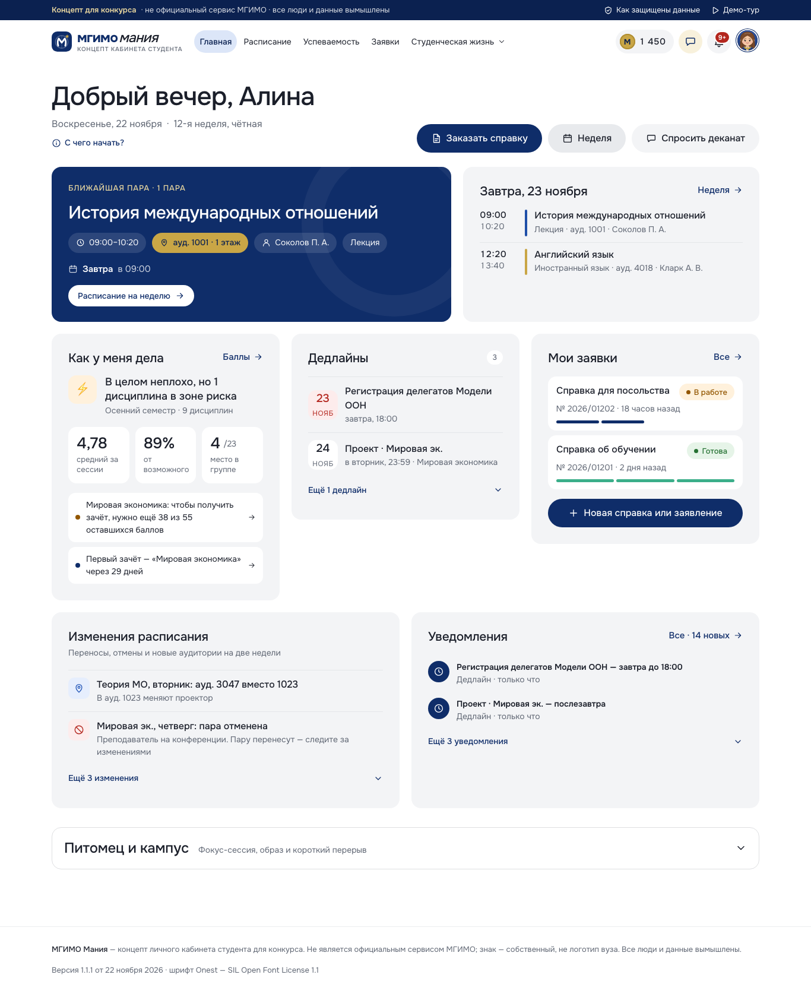
Указатель — ссылки кликабельны и в PDF:
| Что | Где |
|---|---|
| Проблема и гипотезы | раздел 1 |
| Опрос 25 студентов: что мешает и как прошли задания | раздел 1 |
| Основной сценарий: справка от заявки до PDF | раздел 6 · маршрут жюри · видео |
| Примеры работы с ИИ: поручение → ошибка агента → решение человека → исправление → тест | раздел 9 |
| Одна правка целиком: ссылка проверки справки — поручение, находка, решение, коммит, тест до и после | пример 4 |
| Защита данных простыми словами | раздел 6 |
| Вклад команды и инструменты | раздел 11 |
| Ранняя версия рядом с итоговой | раздел 9 |
| Проверки версии 1.1.1: 115/115 и 604/604 в чистой копии, Safari на iPhone, замер нагрузки | раздел 10 |
mgimo2026.dekanat.mo по ссылке «Ваш демо-кабинет» находит её по номеру и отмечает
готовность → Алина получает уведомление и скачивает PDF → Тимур по той же ссылке видит
«Заявка не найдена». Всё работает с телефона от 360 px.CLAUDE.md и .claude/; журналы промптов и ошибок — docs/ai/.Дальше: раздел 1 — продукт, разделы 2–3 — работа с ИИ, раздел 9 — ошибки и доработки, раздел 10 — журналы проверок. Шаблоны промптов на будущее — в методичке.
Студенту обычно приходится собирать учебную жизнь по частям: искать расписание, проверять оценки в другой системе, выяснять порядок получения справки и следить за объявлениями в чатах. Мы хотели собрать эти действия вокруг одного человека и одного понятного вопроса: «Что мне нужно знать и сделать сейчас?»
Поэтому ядром проекта стали пять связанных задач. В профиле хранятся данные для заявления. Изменение пары появляется и в расписании, и в уведомлениях. Учебный риск объясняется через баллы и следующий шаг. Заявка не заканчивается сообщением «отправлено»: студент видит её движение и результат решения деканата.
Технический тест подтверждает действие приложения. Понимает ли его студент и стало ли ему удобнее, нужно проверять отдельно. Поэтому для каждой идеи фиксируем оба вопроса.
| Гипотеза | Решение в прототипе | Что подтверждено проверками | Что проверить со студентами |
|---|---|---|---|
| Явный первый шаг помогает перейти от знакомства к действию | Кнопка «С чего начать» открывает диалог: расписание, оценки и справки; эти действия доступны и при первом знакомстве | Отдельные браузерные повторы — по 34/34. Два студента, которым мы показали прежнюю версию, не сразу нашли первое действие | Стало ли понятно первое действие без подсказки? Повторная проверка после правок ещё не проведена |
| При коротком визите важнее ближайшая пара и изменения | Главная с ближайшим занятием; день и неделя с аудиторией и переносами | Переходы, разные дни, экспорт календаря и экран 360 px | Найдёт ли человек нужную аудиторию и заметит ли перенос без подсказки? |
| Баллы полезнее, когда понятен следующий шаг | Порог, недостающие баллы и подробности дисциплины; переход к пересдаче | Формулы расчёта, фильтр риска, открытие подробностей | Сможет ли студент своими словами объяснить риск и выбрать действие? |
| Прозрачный статус сокращает неопределённость после заявления | Форма → решение сотрудника → история → уведомление → образец документа | Полный путь двух ролей, сохранение полей, получение документа | Понятно ли, кто сейчас обрабатывает заявку и что делать после готовности? |
| Объявление полезнее, когда ведёт к предмету сообщения | Персональные уведомления со ссылкой на заявку или расписание | Переход к нужной заявке, адресаты, сохранение прочитанного | Различает ли человек общую новость и событие, требующее его действия? |
| Необязательный игровой слой придаёт кабинету характер | Питомец, фокус-сессии и кампус; учебные разделы доступны напрямую | Наличие отдельных маршрутов; учебный путь проходит без игры | Помогает ли этот слой возвращаться в кабинет или отвлекает от основной задачи? |
Источники технических проверок: domain.test.js, security.test.js,
backend-regressions.test.js, browser-flows.py, browser-accessibility.py
и browser-home-priority.py. Даты и результаты конкретных запусков — в разделе 10.
Изоляция аккаунтов является обязательным требованием: сервер проверяет владельца,
а при смене входа форма и помощник получают данные нового студента.
Проблема взята из конкурсного задания. Готовый кабинет мы показали двум студентам. Обоим было понятно назначение сервиса и его возможности, но при переходе от знакомства к действию они не сразу поняли, с чего начать и куда нажать дальше. Оба в итоге разобрались. Имена мы не публикуем; анкет и замеров времени у нас нет — это качественная обратная связь, а не исследование.
По этому замечанию реализована заметная кнопка «С чего начать» на главной. Она открывает диалог с прямыми переходами к расписанию, оценкам и справкам; его можно закрыть. При первом знакомстве эти действия заменили единственное предложение настроить аватар. Техническая проверка описана ниже. Повторное пользовательское тестирование после изменений не проводилось.
Следующая проверка с участниками должна была использовать четыре задания без подсказок: найти изменённую пару, объяснить учебный риск, заказать справку и найти готовый документ, а после основного пути — спросить о пользе игрового слоя. Её результаты — ниже.
Таблицу ответов автор передал 22 ноября: 25 анонимных ответов на форму, все — выбор из готовых вариантов, без имён, почты и дат. Отвечали студенты 1–4 курсов и магистратуры; по формулировкам вопросов задания в кабинете они выполняли с телефона. Копия ответов, расчёт и способ пересчитать — survey-2026-11-22.
| Гипотеза | Что ответили о нынешних способах | Как прошли задания в кабинете |
|---|---|---|
| Прозрачный статус сокращает неопределённость после заявления | Справка или заявление нужны были 24 из 25; 19 получают справку лично и ждут дольше двух дней; «получить справку и знать, когда готова» трудно 11 | «Заказ справки» назвали самым трудным 2, «найти документ» — 1 |
| Баллы полезнее, когда понятен следующий шаг | Точно понимают до сессии, хватает ли баллов, 4 из 25; 9 узнают в конце семестра | «Риск по дисциплине» — самое трудное для 3, у них средняя лёгкость 3,7 из 5 |
| При коротком визите важнее ближайшая пара и изменения | «Вовремя узнать о переносе» трудно 9; узнают из приложения вуза (18) и на месте (14) | «Перенос пары» — самое трудное для 3, средняя лёгкость 4,3 |
| Объявление полезнее, когда ведёт к предмету сообщения | «Найти объявление деканата» трудно 12 — вторая по частоте проблема | Отдельного задания не было |
| Кабинет удобен с телефона | «Делать всё с телефона» трудно 15 — самая частая проблема | Самооценка лёгкости заданий с телефона — 4,4 из 5; «все были лёгкими» — 16 из 25 |
| Необязательный игровой слой придаёт кабинету характер | — | Помогает возвращаться — 17, не нужен, но не мешает — 5, отвлекает — 2, незаметен — 1 |
Пользоваться таким кабинетом вместо нынешних способов готовы 22 из 25 («да» и «скорее да»), не готовы трое.
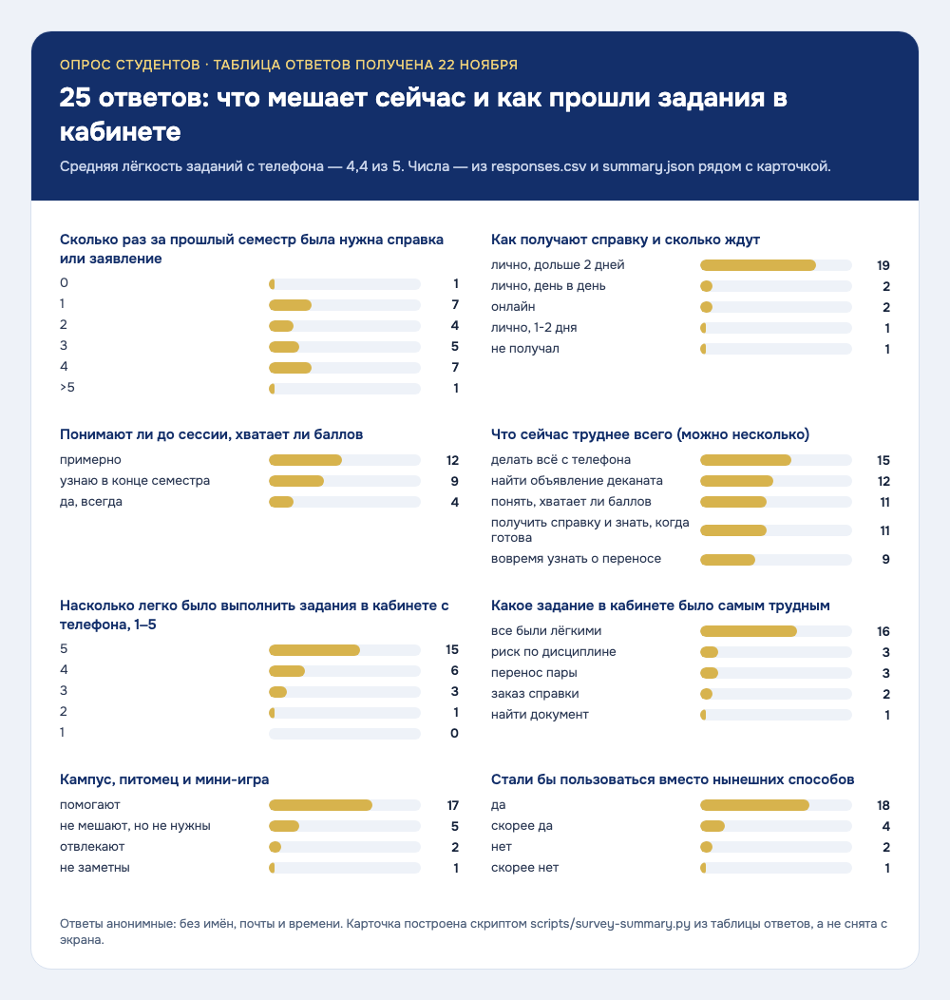
scripts/survey-summary.py из таблицы ответов, а не снята с экрана. Лёгкость — самооценка участников.Что изменили. Чаще других самыми трудными называли «риск по дисциплине» и «перенос пары» — по три ответа;
у риска ниже средняя лёгкость, поэтому его взяли первым. На главной в ярлыке «Требует внимания» было
только название дисциплины, и причину приходилось искать в оценках. Теперь ярлык называет её теми же
числами, что в успеваемости, — у Алины «Риск · нужно ещё 38 из 55 баллов» (4209326, проверки
grades-forecast.test.js и browser-home-priority.py).
Повторный замер. Пятеро из тех же 25 участников повторили четыре задания и ответили на те же два вопроса; ответы мы внесли в два новых столбца таблицы (survey-repeat-2026-11-22).
| Исходный замер | Повторный замер | |
|---|---|---|
| Участников | 25 | 5 — из тех же 25 |
| Самооценка лёгкости, 1–5 | 4,4 в среднем | у этих пятерых было 3,2, стало 4,4 |
| «Все задания были лёгкими» | 16 из 25 | у пятерых было 1, стало 3 |
| Самым трудным назвали | риск по дисциплине — 3, перенос пары — 3, заказ справки — 2, найти документ — 1 | стало: заказ справки — 1, найти документ — 1 |
Фактическая разница — у тех же людей: +1,2 балла, у каждого на 1 или 2. Средние двух групп (4,4 и 4,4) напрямую не сравниваются: в пятёрку попали те, кто в исходном замере оценил задания ниже остальных (3,2 против 4,7 у двадцати не повторявших), а такие оценки при повторе склонны расти и без изменений; добавляется привыкание к заданиям. Единственный в пятёрке, кто называл самым трудным риск по дисциплине, после правки ответил «все были лёгкими»; трудными остались «найти документ» и «заказ справки». Повторяли на исправленной версии, с причиной риска на главной, — это наши слова: в таблице сборка не записана.
Чего опрос не показывает. Время до первого верного действия и успех по каждому заданию не записывались — только самооценка лёгкости и одно самое трудное задание. Свободных ответов нет, поэтому правка для риска — наша гипотеза о причине. Повторный замер — пять человек, отобранных не случайно, а 25 ответов без описания выборки не репрезентативны для всех студентов. Автоматические проверки и уменьшение высоты страницы не доказывают сокращение времени выполнения задачи студентом.
Вторая часть идеи — ощущение собственного студенческого пространства. Аватар, питомец, виртуальный кампус и короткая игра дают кабинету характер. При этом расписание и справки доступны через обычную навигацию: для учебных действий не требуется играть или копить монеты. Связь игрового слоя с вовлечённостью — гипотеза концепта, а не доказанный образовательный эффект.
Статус справки в демо может меняться автоматически, но проверенный сквозной сценарий использует действие сотрудника: оно записывается в историю и вызывает уведомление студенту. Так короткая демонстрация дополняется полноценным взаимодействием двух ролей.
Кабинет написали Claude Code и Codex — это видно по истории Git, журналам запусков и записям сессий. Документ опирается на то, что можно проверить в проекте: историю Git, исходники, сохранённые результаты запусков и снимки браузера.
| Источник | Что он позволяет установить |
|---|---|
| Наши решения | Мы ставили задачи и решали, куда развивать проект и когда публиковать |
| Git | Состав и зафиксированную последовательность изменений, даты записей и атрибуцию соавторства |
| Исходники | Как устроены сценарии, защита, интерфейс и интеграция помощника |
| Журналы и реальные снимки | Что было выполнено в конкретном запуске и как выглядел проверенный экран |
| Наши дословные просьбы | Короткие постановки 8–9 ноября, сохранённые в записях сессий docs/evidence/*-session.json |
| Журнал промптов | docs/ai/PROMPTS_LOG.md: постановки с указанием происхождения — оригинал, выдержка или реконструкция |
| Диалоги с субагентами 19 ноября | Промпты методички, выполненные по-настоящему: поручение → ответ → изменение в проекте (папка) |
| Методичка промптов | docs/prompts/: промпты по этапам, поручения субагентам и промпты-коррекции. Написана после создания прототипа по его коду и журналам — это методичка, а не журнал |
Чего в документе нет. Ответы ассистентов на ранние постановки 4 ноября не сохранились, поэтому «восстановленных» диалогов того времени здесь нет. Ранние этапы мы прогнали заново 19 ноября как настоящие задачи: субагент выполнил промпты П-01 (понять задание), П-04 (концепция), П-05 (спецификация) и П-08 (модель угроз), его ответы сохранены целиком и сверены с кодом (reruns/, раздел 3). Ранняя версия документа содержала четыре изображения диалогов, созданные ChatGPT (в PNG есть метаданные C2PA: ChatGPT, gpt-image), и подписывала их как скриншоты переписки; в записях сессий 8 ноября эта подпись сохранилась как историческая цитата. На признаки генерации указала ИИ-проверка материалов: у всех четырёх файлов одинаковый размер 1536×1024 и вес около 1,6 МБ, а рамка окна — macOS, хотя работа шла в Windows. Отчёт той проверки остался в чате, поэтому её дата не подтверждена; сборка PDF 9 ноября изображения ещё содержала. 19 ноября мы проверили метаданные C2PA и удалили файлы — см. запись E-11 в журнале ошибок.
| Наша дословная просьба | Кто выполнял | Что получилось | Источник |
|---|---|---|---|
| «вот фотки подставь их ну вот и подними все до 10» | Codex и три субагента: документы, интерфейс, публикация | Компактная успеваемость с фильтром риска, меню «Студенческая жизнь», публикация сборки review-b27684eaebf8 |
review-session.json |
| «подними все до 10 и запуш все» | Codex и субагенты: главная, успеваемость, документы | Главная без дублей с быстрыми действиями, компактная форма справки, маршрут жюри | quality-session.json |
| «давай вот все поправим и зальем сайт и на github тоже все зальем» | Codex: основной агент и субагенты расписания, публикации и документов | «С чего начать», читаемое расписание, публикация review-21595807feaf, 194/194 проверки на HTTPS |
finalization-session.json |
| «проверь по критериям все что написано… все что сделал», затем «давай все правки сделаем чтобы дотянуть до 10» | Claude Code (Claude Opus 5.5) | Независимый аудит и восемь исправлений с регрессиями (раздел 9) | Коммиты 0e3d1c3…645b5c5 |
| «вот промпты которые использовались… обращайся к подагенту… sonnet… делаешь скрины… пушить не забываешь» | Claude Code и субагенты Claude Sonnet 5.5, 18–19 ноября | Промпты методички выполнены по-настоящему, комплект файлов для агентов, диалоги — ниже в разделе 3 | subagents-2026-11-19/ |
Короткие просьбы сработали потому, что агенты сами восстанавливали контекст из кода,
AGENTS.md и критериев. Как такие просьбы стоило формулировать полностью — в
методичке, раздел «Было → стало».
Первая версия кабинета создана за одну сессию Claude Code в приложении Claude (модель Claude Opus 5.5) 4 ноября, 20:49–22:13 МСК. Стартовым промптом был полный текст конкурсного задания. Дальше агент работал сам: создал 89 файлов, внёс 50 правок, выполнил 39 команд и около 75 действий во встроенном браузере — открывал разделы кабинета, проходил сценарии и проверял вёрстку на экране 360 px. Через веб-поиск агент уточнил фирменные цвета МГИМО, список факультетов и 100-балльную систему оценивания.
8 ноября проект проверяли и дорабатывали в Codex: сохранился 31 журнал сессий — основные сессии и сессии субагентов — с 46 постановками задач — нашими и основного агента субагентам. Из этих сессий взяты поручения и результаты, описанные в разделах 3 и 9. Журналы хранятся у нас локально и в репозиторий целиком не входят: в них есть служебные данные сервера.
Коммиты 4 ноября не отражают хронологию работы. В конце той же сессии агент написал
скрипт, который разложил готовый код на 629 последовательных коммитов по файлам
и функциям, сверил итоговое дерево с резервной копией и отправил историю в GitHub.
Все 629 коммитов созданы за 2 минуты 21 секунду (22:09:47–22:12:08). Поэтому они
показывают устройство кода — от каркаса и модели данных к логике и интерфейсу, —
а не время, потраченное на каждую часть. В них есть трейлер Co-Authored-By с именем
Claude; это атрибуция в репозитории, а не независимое подтверждение текста промптов.
Начиная с 8 ноября каждый коммит — отдельная реальная итерация: аудит и исправления, интеграция OpenRouter, публикация, возврат посетителей прежнего сайта, доработка интерфейса. Полный экспорт — в git-history.json.
| Этап | Примеры коммитов | Что можно увидеть в проекте |
|---|---|---|
| Устройство кода, разложенное 4 ноября | 9c74eef, 832c17b, 5b9088a, aea48ab |
Каркас Node.js, схема SQLite, расписание, успеваемость, заявки, стили |
| Аудит и доработка, 8 ноября | 00882b7 |
Исправления сценариев, интеграция OpenRouter, тесты и документы |
| Публикация, 8 ноября | 969bdf4, 2e48826 |
Конфигурация сервиса и результаты приёмки |
| Возврат посетителей прежнего сайта, 8 ноября | 6376d05, e3ac392 |
Исправление старого офлайн-кеша и браузерный сценарий |
| Доработка по критериям, 8–9 ноября | 19e9672, 0e3d1c3, a1aff22 |
Первые действия, мобильный интерфейс, ограничения демо-стенда |
Наша роль — выбрать задачу и продукт, передать агентам критерии конкурса, давать обратную связь по результатам и решать, что и когда показывать. На позднем этапе мы предложили OpenRouter, сами задали настройки доступа к провайдеру, отложили необязательный ролик и сообщили агенту, что после публикации открылся старый сайт. Ключи и другие секреты в этот документ не включаются.
Codex использовался для согласованной работы над кодом, проверками и материалами. Работа была разделена между основным ассистентом и тремя направлениями субагентов.
| Направление | Задача | Проверяемый результат |
|---|---|---|
| Основной ассистент | Сопоставить проект с заданием, распределить файлы и проверить интеграцию | AGENTS.md, скрипт collect-evidence.py, общий журнал run-summary.json |
| Сервер и безопасность | Проверить доступ, заявки, сеансы, сохранение и ошибки | server/routes/, server/security/; регрессии персональных дедлайнов, параллельного входа и дат в backend-regressions.test.js |
| Интерфейс | Пройти основные экраны, мобильные сценарии, клавиатуру и смену аккаунта | public/; очистка состояния после выхода, восстановление после ошибки, браузерные сценарии и снимки |
| Документы | Сверить описание с кодом, уточнить лицензии и собрать историю | PROCESS.md, THIRD_PARTY.md, SUBMISSION.md; реальные диалоги, команды и результаты по этапам |
В AGENTS.md сначала было шесть инвариантов; 19 ноября комплект для агентов расширил их до 12,
и у каждого теперь указан тест, который его охраняет. Там же структура каталогов и правила проверки.
Например, пользователя определяет серверная сессия; смена аккаунта очищает кеши;
основной кабинет работает без внешнего ИИ; новые заявки сохраняются после перезапуска.
Перед параллельными правками распределяется владение файлами.
В сохранённом описании позднего этапа приведены конкретные выдержки задач:
«Проверь изоляцию минимум двух студентов, роли деканата, сессии/CSRF, основные сценарии заявок и расписания, персистентность, ошибки; запускай имеющиеся тесты».
«Проверь сценарии login/profile/schedule/grades/requests/notifications, мобильные 360px, доступность, ошибки/пустые состояния, явную маркировку конкурсного концепта/вымышленных данных».
Полные тексты поручений субагентам 19 ноября — ниже в этом разделе и в папке briefs/.
Мы передали основному агенту — Claude Code (Claude Opus 5.5) — библиотеку промптов команды (docs/prompts/) и попросили: «обращайся к подагенту то есть к sonnet… делаешь скрины… пушить не забываешь». Основной агент не стал пересказывать промпты, а отдал их субагентам Claude Sonnet 5.5 как настоящие задачи на этом проекте. Поэтому ниже — не реконструкции, а реальные диалоги: поручение, ответ субагента и изменение в репозитории.
Как устроена работа:
<имя>.json рядом.| Субагент | Промпт библиотеки | Что сделал | Как проверено | Коммит |
|---|---|---|---|---|
| A · ошибки ИИ | О-9 «Найди все следы» | Нашёл все упоминания QR и исправил единственное обещание пользователю: квиз «Первые шаги» обещал справку «с QR-кодом» | Новый test/qr-mentions.test.js падал 2 из 5 до правки; снимки квиза до и после |
fe1191c |
| D1 · повторный прогон | П-01, П-04, П-05, П-08 | Ответил на промпты исследования, концепции, спецификации и модели угроз и сверил каждый ответ с кодом | Только чтение; находка по П-08 → поручение F | 0706409 |
| D2 · повторный прогон | П-10, П-20, П-23, П-27, П-36 | Ответил на промпты дизайна, заявок, ИИ-помощника, проверки со студентами и сценария видео | Только чтение; находка по П-10 → поручение G | 0706409 |
| F · безопасность | продолжение П-08 | Тест внедрения разметки через объявление и комментарий, тест ключей во всей истории Git, тест cookie __Host- в боевом режиме |
21 браузерная проверка XSS; каждый тест падал на нарочно сломанной копии | 6616890 |
| G · дизайн | продолжение П-10 | Текст подсказок, зачёркнутой аудитории и «нет баллов» был 2,17–2,39:1 — стал 4,51–4,96:1; белый на красном 3,91 → 6,54:1 | scripts/check-contrast.py, test/contrast.test.js (24 проверки), снимки до и после |
3aff3bb |
| E · документы | по README библиотеки | Перенёс библиотеку в docs/prompts/ с пометкой происхождения, исправил 16 неверных утверждений, сверил 40 хешей коммитов |
Скрипт проверки ссылок | 89748f4 |
| C · файлы для агентов | П-09 «Собери комплект для агентов» | AGENTS.md, CLAUDE.md, QWEN.md, шесть субагентов и три команды в .claude/, docs/ai/ |
Пробный прогон комплекта на задаче и сверка каждой ссылки | 89748f4 |
| B · независимый аудит | П-28 «Независимый аудит „свежим“ агентом» | Проверил итоговое состояние как эксперт: девять находок — от доступа к репозиторию и устаревшего PDF до первого экрана входа на телефоне | Тесты, API-пробы изоляции, свой браузерный маршрут на 360 и 1366 px, сверка архива с Git | babcd1d и поручение H |
| H · интерфейс | находка аудита П-28 | На телефоне кнопки тестовых аккаунтов попали в первый экран (кнопка поднялась с 976 до 730 px), уведомление о входе закрывается нажатием и держится 2,8 с | test/browser-mobile-entry.py: 16/16, на старом коде 12/16; снимки до и после |
c8955dc |
Цепочка, ради которой это делалось. Промпт → ответ → сверка с кодом → находка → новое поручение → исправление → тест. Ответ на П-08 показал, что экранирование объявлений описано, но не проверено, — субагент F написал браузерный сценарий XSS. Ответ на П-10 посчитал контраст токенов и нашёл серый текст 2,39:1 — субагент G исправил цвет и закрепил его тестом. Так промпты библиотеки проверили не только себя, но и проект.
Что пошло не так. Первый запуск пяти субагентов 18 ноября упал сразу с ошибкой API (аккаунт требовал подтверждения). На следующий день четыре субагента с максимальным усилием упёрлись в пятичасовой лимит Sonnet; по нашей просьбе их перезапустили с усилием medium. Ошибку в поручениях допустил и основной агент: в них стояла дата «18 ноября», хотя настоящие запуски прошли 19-го. Тексты поручений сохранены как есть, а даты в документах исправлены.
Диалоги. Карточки — не снимки экрана ассистента: их отрисовывает скрипт scripts/render-dialogue-cards.py из сохранённого текста поручения и ответа субагента. Длинные тексты в карточке сокращены с пометкой; полный текст обоих — в JSON рядом с изображением.
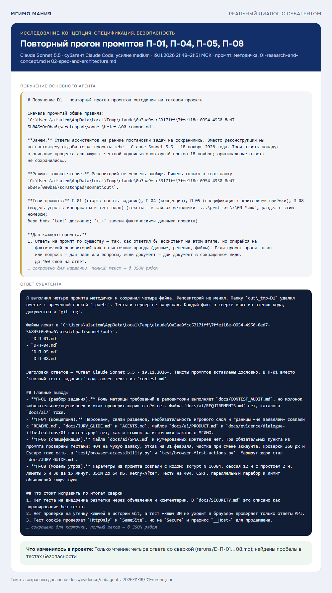
reruns/.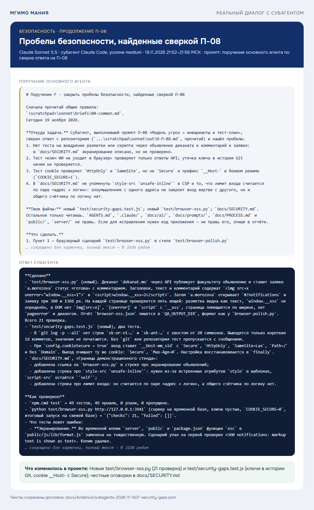
6616890.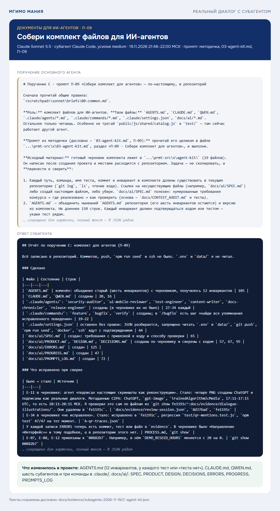
AGENTS.md, CLAUDE.md, QWEN.md, .claude/, docs/ai/.Карточки остальных шести поручений — A, D2, G, E, B и H — и снимки до и после их правок: квиз, контраст, первый экран входа — в приложении.
Для конкурсного прототипа выбран небольшой стек: Node.js с серверными модулями HTTP, SQLite и криптографии; в браузере — ES-модули без сборки. Данные и правила остаются на сервере. Интерфейс получает JSON, показывает состояние и отправляет действия.
В маршрутах находятся проверки роли и входных данных. Предметная логика отдельно собирает расписание, считает учебные показатели и проводит заявку через статусы. SQLite хранит профили, сеансы, заявки, уведомления и игровой прогресс. Такое разделение помогает проверять правила без браузера и менять интерфейс без переписывания прав доступа.
Что получилось. Пять обязательных задач связаны общими сущностями, а роли студента и деканата разделены на сервере. Выбранная архитектура подходит для работающего демо. Горизонтальное масштабирование потребует отдельной работы с хранилищем, общими лимитами и фоновыми задачами; оно не заявляется как готовая возможность.
В расписании важна не только таблица, но и исключения из неё. Поэтому регулярные занятия и изменения хранятся раздельно: отменённая пара или новая аудитория отражаются при сборке конкретной недели. Время рассчитывается по Москве, независимо от расположения сервера.
В успеваемости мы показываем не только итоговую цифру. Контрольные точки, прогноз, учебный риск и пороги помогают понять положение по дисциплине. Сессия и зачётка собраны рядом, чтобы студенту не требовалось искать их в другом сервисе.
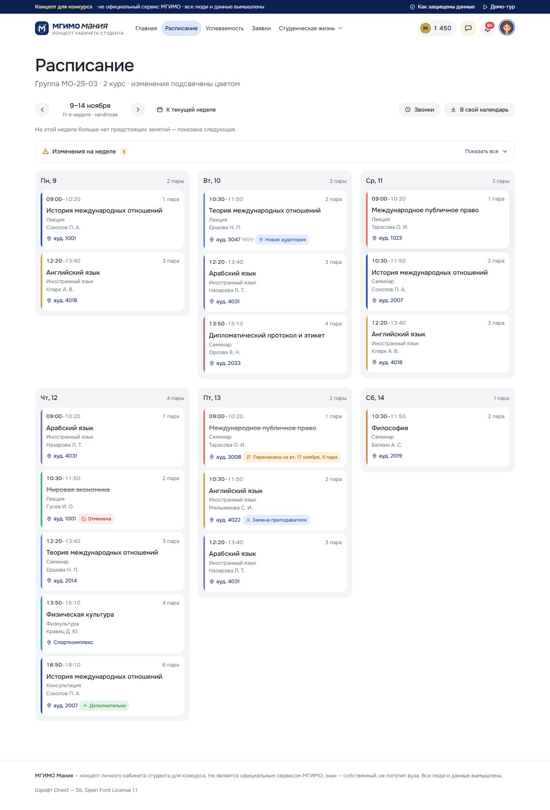

Инженерная итерация. При проверке выяснилось, что персональный дедлайн с указанной группой мог попасть в выборку другого студента. Условия отбора уточнили в API, уведомлениях и контексте помощника. Для длинной истории исправили «прочитать все»: действие теперь не ограничивается первой загруженной частью списка. Оба случая проверяются регрессионными тестами.
Путь заявки построен по модели отслеживания: студент понимает, что отправлено, какой сейчас статус и что было сделано. Форма подставляет учебные сведения из профиля, а повторная отправка той же формы открывает уже созданную заявку. Сотрудник видит очередь своего факультета, находит заявку по номеру, принимает решение и оставляет комментарий. Студент получает уведомление и видит запись в истории.
Для такого сценария важно разделить два решения: что видит студент после отправки и кто вправе изменить статус. Поэтому в кабинете две роли, а сотрудник ограничен своим факультетом; роли и переходы проверяются по коду и сквозному тесту.
Список статусов включает подачу, работу, готовность, выдачу, одобрение и отмена; допустимый путь зависит от вида документа. Уведомление связано с конкретным номером заявки, а сотрудник ограничен своим факультетом. Эти детали превращают демонстрацию в проверяемый процесс с владельцем, действием и результатом.
У электронного образца есть код и ссылка проверки. «Скачать PDF» сохраняет файл: сервер собирает A4 со встроенным шрифтом, пометкой «Образец» и кликабельной ссылкой проверки; «Распечатать» открывает печать браузера. Образец явно обозначен как демонстрационный документ без электронной подписи — он не выдаётся за официальную справку университета.
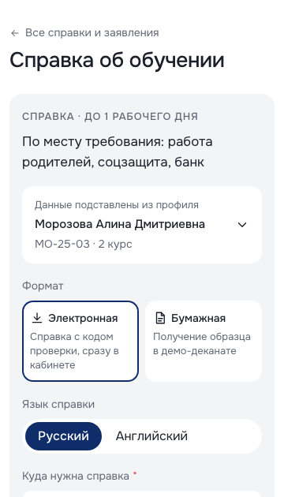
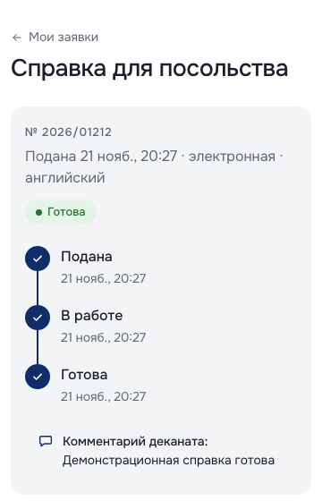
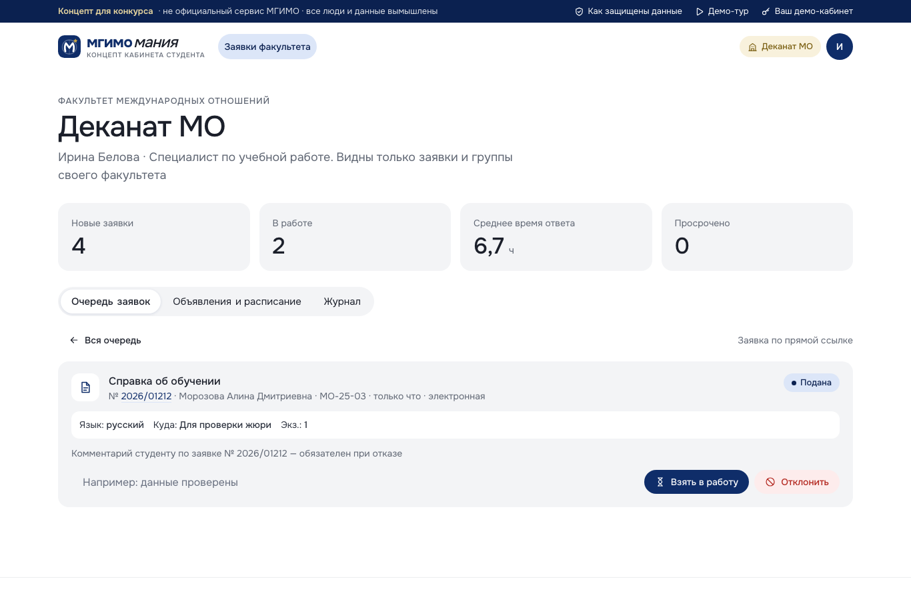
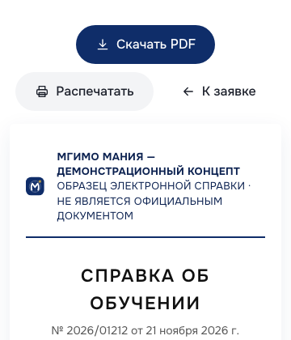
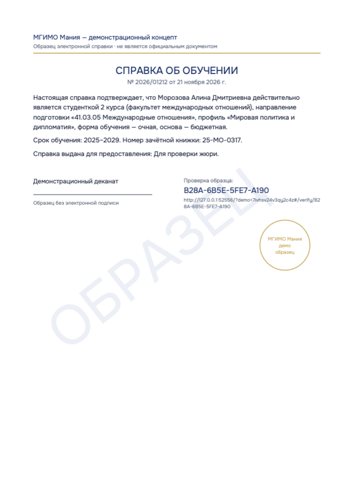
Кадры на 360 px обрезаны до действия из снимков итогового прогона (как обрезаны).
Пароль сравнивается с хешем scrypt и случайной солью. После входа браузер получает случайный идентификатор сеанса в HttpOnly-cookie; сервер хранит его хеш. В HTTPS-режиме cookie передаётся только по защищённому соединению. Изменяющие запросы проверяются по CSRF-токену и источнику Origin.
Номер заявки в адресе не определяет право доступа. Сервер проверяет владельца по сеансу; для сотрудника дополнительно ограничивает факультет. Подмена номера не открывает чужой документ. После смены аккаунта очищаются данные интерфейса и кеши модулей, включая автозаполнение формы.
В итоговой локальной версии справка о стипендии получила таблицу шести завершённых месяцев, суммы по месяцам и общий итог вместо общего утверждения о назначении выплаты. Нулевые начисления обозначены отдельно. Все суммы — демонстрационные, что явно указано в документе; проверяются арифметика, оформление на двух ширинах и сохранение в PDF.

Инженерные итерации. Исправлены кеш профиля предыдущего пользователя, нормализация невозможных дат и обход последовательного счётчика неверных входов параллельными запросами. Автоматический сброс демонстрационной базы выключен по умолчанию, чтобы созданные изменения не исчезали. Декоративный рисунок, похожий на QR, заменён честной ссылкой и кодом проверки.
Проект использует светлые карточки, тёмно-синий и золотой акценты, единые поля и кнопки. Шрифт Onest хранится локально вместе с лицензией. Собственный знак, аватар, питомцы и кампус реализованы SVG; короткий раннер — Canvas. Отдельная генерация растровых картинок для интерфейса приложения не подтверждается и не заявляется.
Дизайн и контент делали ИИ-агенты, а не отдельные графические сервисы. Знак, аватары, питомцы,
кампус и раннер (public/js/art/, public/js/campus/, public/js/game/), тексты интерфейса и вымышленные
демо-данные (server/seed/) по истории Git появились в первой версии 4 ноября, которую собрал Claude Code
по тексту задания. Дальше их правили агенты в итерациях раздела 9: контраст текста, первый экран входа,
формулировки справки. Генератор изображений использовали один раз — для «диалогов» ранней версии этого
описания; их удалили как недостоверные (E-11). Карточки опроса и проверок здесь построены скриптами
по данным, а не нарисованы генератором.
Визуальные решения подчинены порядку действий. Ближайшее занятие и срочные задачи нужны при коротком визите с телефона; подробности дисциплин и история документов — при более долгой работе. Поэтому ключевые сведения видны на главной, а дополнительное содержимое раскрывается по запросу. Названия действий и текстовые статусы дополняют иконки и цвет. Одинаковые карточки, поля и кнопки сокращают необходимость заново разбираться в каждом разделе.
Замечание об интерфейсе превращалось в конкретную задачу: поменять приоритеты блоков и объяснить балл через учебный порог. Измерения изменений интерфейса приведены в разделе 9, а снимки готового кабинета получены браузерными сценариями.
Главная помогает быстро найти ближайшую пару, срок и нужное действие. На телефоне сохраняются те же учебные сценарии. Игровой кампус добавляет альтернативный способ перейти в раздел, а фокус-сессии связывают питомца с учебным контекстом.
В продукте кампус даёт дополнительный путь к разделам, а питомец и короткая игра создают узнаваемый образ кабинета. Доступ к расписанию и заявкам не зависит от игрового прогресса. Проверяемое ограничение здесь — возможность выполнить учебную задачу обычной навигацией, даже если человек ни разу не открывал игру.
Второстепенные списки и игровой блок на телефоне сворачиваются, сохраняя доступ по нажатию и с клавиатуры. Ближайшая пара, учебная ситуация и действие со справкой остаются в основном учебном пути. Итерации и измерения описаны в разделе 9.
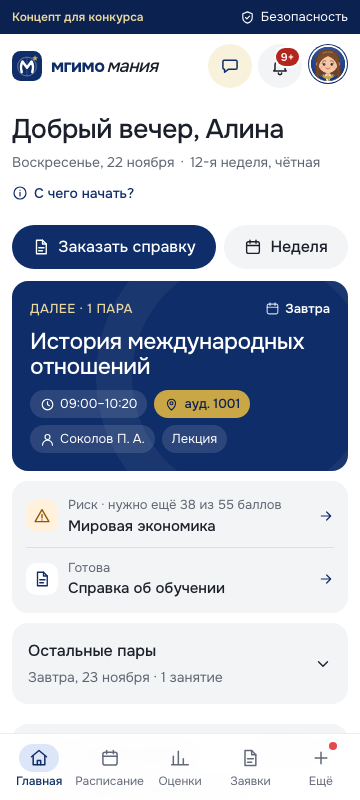
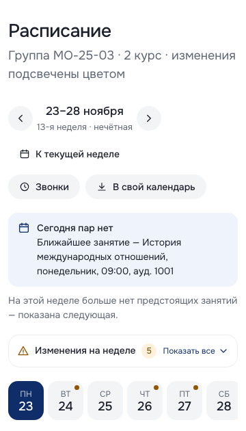
Инженерная итерация. В части разделов кнопка повторной загрузки не запускала запрос. Добавлен общий обработчик восстановления. Отдельно проверяются подписи полей, переход к основному содержимому, фокус в обычном и вложенном диалоге, Tab/Shift+Tab, Escape, управление днями расписания и настройка уменьшения анимаций.
Использование ИИ для разработки и ИИ-помощник в приложении — две разные части проекта. Первое описывают история работы и постановки задач. Второе — конкретная пользовательская функция: получить краткий ответ по своему расписанию, группе, срокам или заявкам.
Помощник получает ограниченный контекст вошедшего студента. Вызов провайдера идёт только с сервера; ключ не передаётся браузеру. Модель не получает инструменты изменения оценок и решений деканата. При отсутствии ключа, ошибке или тайм-ауте работают встроенные правила, а источник ответа показан пользователю.
Контракт внешнего API проверяется подставными ответами, включая ошибки и отсутствие полезного текста. Ранее, при публикации 8 ноября, отдельно выполнены живые запросы OpenRouter для двух студентов. Ответы о группе совпали с их профилями; история прошлого аккаунта не появилась в новом сеансе. Эти результаты сохранены в assistant-browser-live.json.

При первом подключении провайдер отклонил ключ с HTTP 401. Этот ответ не был принят за успешную интеграцию. После замены ключа в серверном окружении запрос прошёл; значения ключей не сохранялись в материалах. Успех конкретных запросов не является гарантией точности будущих ответов модели.
Задачу ИИ формулировали через наблюдаемое поведение. Недостаточно написать, что «сохранение работает»: нужно создать заявку, открыть ту же базу после перезапуска и сравнить данные. Недостаточно показать красивую форму: нужно отправить её, обработать в деканате и получить результат под исходным аккаунтом.
| Обнаруженная проблема | Что изменили | Как это проверяется |
|---|---|---|
| Автозаполнение сохраняло профиль после смены аккаунта | Очистка модульного кеша и состояния | Два разных входа в одной вкладке |
| Персональный дедлайн мог попасть другому студенту той же группы | Уточнение условий видимости | Сравнение API, уведомлений и контекста помощника |
| Параллельные неверные входы обходили счётчик | Резервирование попытки до проверки пароля | Одновременные запросы входа |
| «Прочитать все» оставляло часть истории непрочитанной | Обработка всей доступной истории | Длинная история уведомлений |
| Невозможная дата превращалась в другую дату | Строгая календарная проверка | Некорректные даты и недели |
| Повторная загрузка не работала в части экранов | Общий обработчик восстановления | Ошибка 503, затем нажатие «Повторить» |
| Старый сайт открывался после смены приложения на домене | Миграция прежнего service worker | Старый worker, две вкладки, сохранение других данных |
Каждая итерация начиналась с нашей просьбы и заканчивалась проверкой, которая падала бы без исправления. Полный текст итераций с поручениями, измерениями и снимками — в приложении.
| Когда | Что нашли | Что изменили и чем проверили |
|---|---|---|
| 8 ноября, после публикации | У вернувшихся посетителей на домене открывался прежний сайт: старый service worker отдавал страницу из кеша | Миграция по прежнему адресу /sw.js снимает старый worker; регрессия с двумя вкладками |
| 8 ноября, первая оценка по критериям | Успеваемость на 360 px — 4355 px высотой: девять подробных карточек | Компактный обзор, подробности по нажатию, фильтр «Требуют внимания»: 2936 px, на 32,6% меньше; 40 проверок |
| 8 ноября, повторная оценка | Главное действие не помещалось в первый экран главной, успеваемость оставалась длинной | Два быстрых действия рядом с ближайшей парой (28 проверок), статистика по запросу: 2096 px (31 проверка), компактная форма справки (19) |
| 8 ноября, вечер | Первые действия и читаемость расписания | «С чего начать» с тремя учебными действиями; три агента с заранее разделённым владением файлами; публикация |
| 9 ноября, независимый аудит | Восемь находок: плашка входа наезжала на текст, ссылки 20–23 px, лента уведомлений около 4900 px, общее «Не найдено» для чужой заявки, лишний Google Fonts в CSP | Каждая находка исправлена и закреплена проверкой |
| 9 ноября, повторная проверка | Семь дефектов: помощник в воскресенье показывал пары понедельника, старая вкладка после смены аккаунта, потеря фокуса при обновлении, контраст подписей | Исправления с регрессионными проверками; публикация на стенде — 25/25 браузерных проверок на HTTPS |
| 19 ноября | Находки промптов библиотеки: квиз обещал «QR-код», экранирование не проверялось, серый текст 2,17–2,39:1 | Квиз исправлен, сценарий XSS, контраст 4,5:1 и выше (раздел 3) |
| 21 ноября, днём | Qwen Code в перечне без следов в репозитории, реконструкции диалогов, имя учётной записи Windows в журналах, видео не было | Убрано, обезличено, ролик записан |

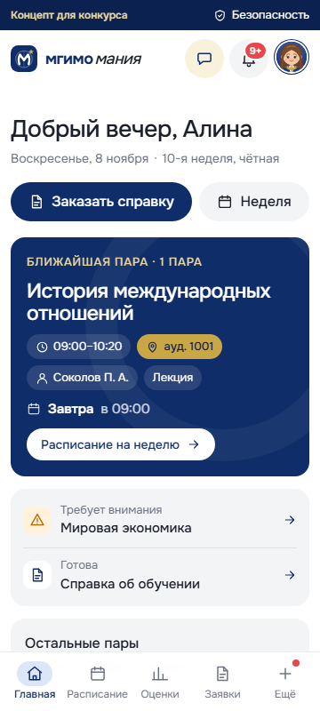
Вечером мы передали Claude Code (Claude Opus 5.5) рецензию независимого проверяющего — 15 пунктов по всем критериям — со словами «выполняй только то, что считаешь действительно нужным. и что поднимает итоговый балл работы и сделает ее качественней». Агент начал выбирать главное, и через две минуты мы решили объём: «проверять, вероятно будут жюри с помощью ии, так что лучше правь все или почти все, кроме лишнего». Дальше мы писали только «продолжи» и «доделай». Полное поручение — review-2026-11-21/prompt.md; агент работал без субагентов, коммиты — от нашего имени с соавтором Claude. Итог: десять пунктов агент закрыл кодом и документами, в пяти (5, 8, 10, 11, 15) сделал свою часть, а остальное в них — наши шаги. 22 ноября второй проверяющий нашёл ошибки и пропуски агента в пунктах 1, 2, 6, 7 и 10 — исправление разобрано в примере 4. Три пункта разобраны целиком.
ctx.store. Пределы и удаление старых — ADR-012…opqrst…). Агент не ослабил тест, а собрал алфавит программно. В прогоне из чистой копии журналы получили путь к Python с именем пользователя macOS; агент заметил это, проверяя журналы до коммита (E-38)DEMO_SANDBOXES=1 — наш шаг; до него стенд показывает версию 19 ноября5a1844e, 367d8fd, 2f061e8, 1472549, cd64f24test/sandboxes.test.js, 7 тестов: разные кабинеты; заявки, объявления, прочитанное и выход не влияют друг на друга; чужой код не открывает кабинет; перезапуск; «чистый кабинет»; готовность базы. browser-review-fixes.py — три проверяющих в браузере. Под нагрузкой создано 10 новых кабинетов, первый вход — 60–81 мс#/schedule/<дата>/<пара> и сразу открывает пару со старой и новой аудиторией. Главная и расписание обновляются при возврате во вкладку, после пары и по уведомлению, не трогая карточку с фокусом. После пар и в выходной — «Сегодня пар нет» и ближайшее занятиеtoggle показал, что гонка в самом тесте: он менял ширину экрана раньше, чем страница обработала нажатие (E-41). Ещё три набора сломались от даты: за 30 дней до сессии на странице оценок появилась вторая ссылка на неё (E-42). Новая плашка «Сегодня» прилипла к строке под ней — агент заметил на снимке прогона и поправил отступ (c37c69a), после чего прогон повторён целикомAGENTS.md, npm run seed — только по нашей команде, а созданные заявки должны сохраниться. Свежие даты получает каждый новый кабинетc33b509, fc973b5, fe3432e, cd64f24, 99e71cb, c37c69a; тесты гонок — 3355226, a0dcf46test/deadlines-links.test.js: относительный срок; старое «послезавтра» показывает актуальный срок и напоминание в день срока; ссылка на дату и пару. browser-review-fixes.py: из уведомления одним касанием к паре; «Сегодня» в расписании81fea7b). Теперь тест сверяет точный текст при подменённых часах браузераpdf-lib со встроенным шрифтом Onest (ADR-013); текст справки — один модуль для страницы и файла. В файле — пометка «Образец», код и кликабельная ссылка проверки; 21 ноября она вела в тот же кабинет, и 22 ноября выяснилось, что так кабинет открывался любому, кто увидел PDF (E-45, пример 4). На странице — «Скачать PDF» и отдельно «Распечатать»AGENTS.md только с записью в DECISIONS.md и нашим согласием: агент записал ADR-013 и спросил нашего согласия до отправки в GitHub; мы ответили «Да, отправить». В Safari на iPhone SE в симуляторе iOS агент проверил сам (22 ноября); на настоящих iPhone и Android проверяем мыac62bcd, 24c060c, a4ab955, e479e6ctest/document-pdf.test.js: файл со встроенным шрифтом и языком, выписка и стипендия, чужую и неготовую не скачать; test/document-model.test.js; browser-stipend.py — текст скачанного файла и итог в «руб.»; browser-review-fixes.py — скачивание на 360 px и проверка по ссылке из файла без входа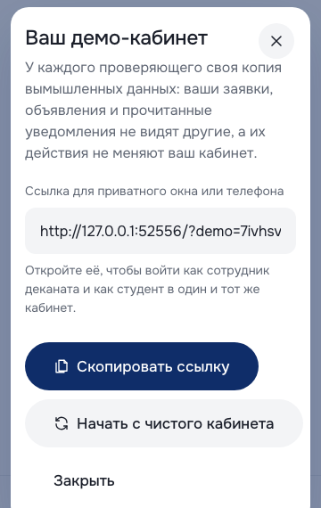
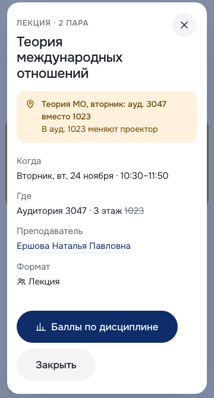
Остальные пункты рецензии агент сделал так:
| Пункт | Что сделано | Коммиты и проверка |
|---|---|---|
| 2. Учёба без игрового API | Вход и учебные разделы работают при ответе 503 от /api/play, игровые разделы показывают заглушку |
cd64f24; browser-review-fixes.py |
| 4. Жизненный цикл справки | Готовая электронная — в «Завершённых»; срок в рабочих днях; дубли с учётом формата, повтор открывает созданную заявку; код из 16 знаков, 40 проверок за 10 минут, минимум сведений | b2b6e03, 475dbd3, 1fde12c; requests-lifecycle.test.js |
| 5. Проверка релиза | Прогон из чистой копии (git clone, npm ci), готовность /api/health, замер нагрузки |
1472549, aa27f37; раздел 10 |
| 7. Достоверный прогноз | «Пока нет данных для прогноза», прогноз допуска отдельно от фактического, ближайшее действие в зоне риска | d4390aa; grades-forecast.test.js |
| 9. Деканат | Поиск по номеру, прямая ссылка, подписанное поле комментария, черновик и фокус при автообновлении; действия по статусам — в маршруте жюри | 1fde12c, 99e71cb, faf9a11; browser-review-fixes.py |
| 11. Первый экран и доступность | На телефоне нет сообщения о входе (прошлый вход — в профиле), ручной демо-тур в «Ещё», вкладки зачётки со стрелками | cd64f24, d4390aa, a95ec63 |
| 12. Обещания интерфейса | Пометки «демо» у push, почты, Telegram и смены пароля; ответ «Какая у меня группа?» по профилю без модели | 99e71cb, 06d1e7e; assistant.test.js |
| 13–15. Материалы | Эти примеры, указатель на второй странице, ранняя версия рядом с итоговой, обрезанные кадры, пакет для капитана в SUBMISSION.md |
этот документ |
За нами остаются шаги, которые агент сделать не может: повторное прохождение заданий после правки по итогам опроса 25 студентов (пункт 8, раздел 1), настоящие iPhone и Android, VoiceOver или TalkBack (пункты 10–11), обновление стенда и оплата VPS до 28 ноября (пункт 5), ролик на площадке из задания и проверка ссылок без входа (пункт 15). Ролик мы перезаписали тем же сценарием на итоговой версии: 2:11, с поиском по номеру и «Скачать PDF». 22 ноября его записали ещё раз, на итоговой версии: в прежнем на странице справки была видна ссылка проверки с кодом демо-кабинета (пример 4).
Код коммита 4f1e623 — последнего из коммитов 4 ноября — мы запустили 21 ноября в 20:13 МСК на свежей
базе и сняли тем же сценарием, что итоговую версию. Это повторный запуск, а не снимок того дня; даты
на экранах — 21 ноября. Все кадры и как повторить.
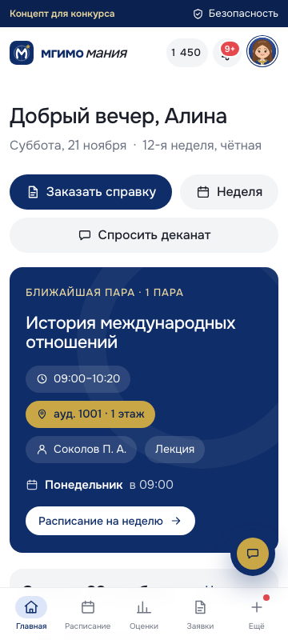
4f1e623): первый экран целиком занимает карточка пары.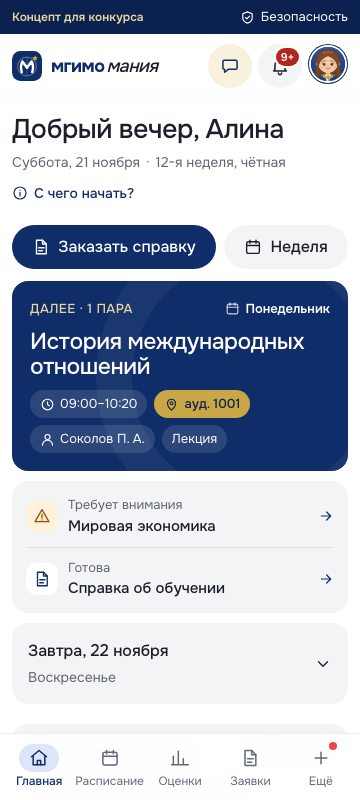
Для обоснования стека мы замерили нагрузку на локальном сервере (Apple M3, один процесс Node.js, без сети): пользователи без пауз открывают главную, расписание, оценки, уведомления и заявки, каждый десятый — очередь деканата. При 10, 50 и 100 одновременных пользователях — около 2 750 запросов в секунду, 0 ошибок, p95 — 6,9, 26 и 53 мс. В режиме стенда с демо-кабинетами — 2 735 в секунду, за 20 секунд под нагрузкой вошли 10 новых проверяющих, первый вход — 60–81 мс. Стенд — другая машина, на нём нагрузку не замеряли: замер и команды.
После отправки мы написали «доделай». Агент прошёл пункт 10 рецензии в Safari на iPhone SE — в симуляторе iOS
на Mac, не на настоящем телефоне: «Скачать PDF» открывает файл, кириллица читается, «Образец» виден; форма
справки работает с русской экранной клавиатурой. Там же нашлась проблема, которую тесты пропускали: тестовые
аккаунты стояли ниже первого экрана, потому что тест проверял только 360×800 и 390×844 (E-44). При исправлении
нашлась вторая причина — автофокус поля логина прокручивал страницу к форме. Теперь аккаунты идут перед формой,
автофокус не прокручивает страницу, а тест проверяет и 375×548, и 360×640: на прежней странице эти проверки
падали (3a4dd99). Снимки симулятора.
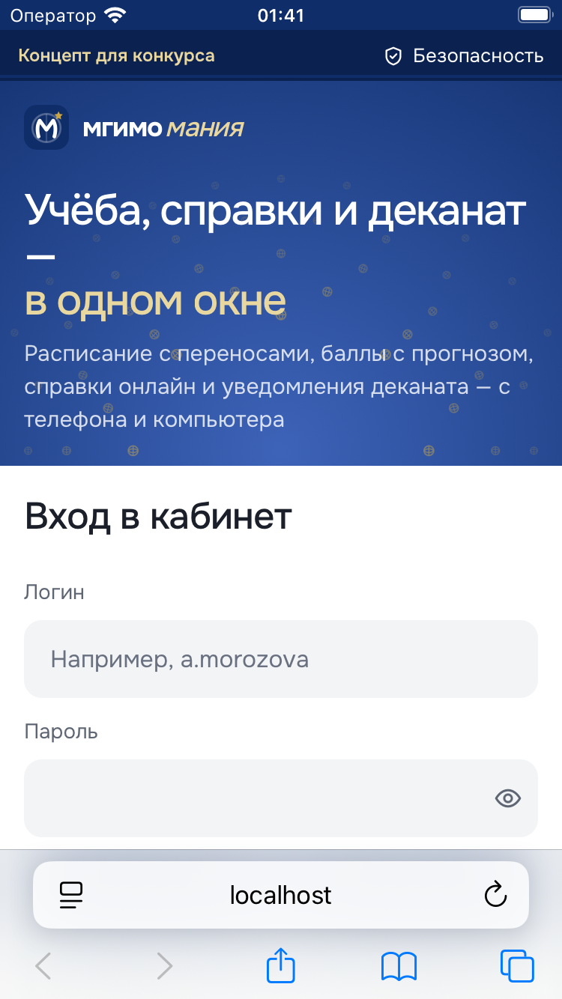
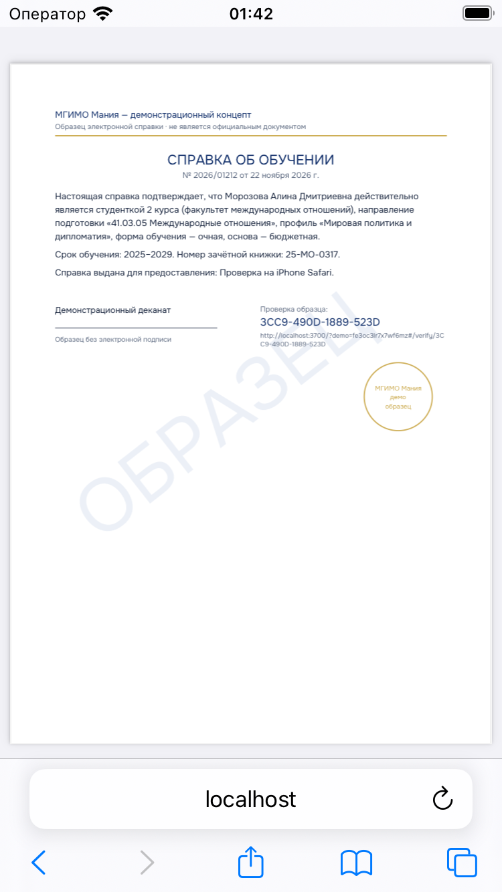
Днём 22 ноября второй независимый проверяющий прислал восемь пунктов. Мы передали их Claude Code (Claude Opus 5.5) вместе с таблицей повторного замера и словами «выполняй их, если считаешь их нужными и что они реально смогут поднять баллы за задания». Полное поручение — review-2026-11-22/prompt.md, что сделано по каждому пункту — README. Повторный замер с пятью участниками опроса провели мы (раздел 1). Одну правку разбираем целиком.
/?demo=<код кабинета>#/verify/<код справки> (e479e6c, 99e71cb). Адрес /?demo= ставит cookie кабинета, а демо-пароли опубликованы — значит, любой, кому показали PDF, входил в кабинет проверяющего и видел его заявки. Браузерный тест 21 ноября эту ссылку требовал: «ссылка из файла ведёт в этот же кабинет». Тем же чтением кода подтвердились проблемы из пункта 2: кабинет создавался до проверки пароля, три одновременных входа давали три кабинета, сброс работал без входа. Сверх рецензии агент нашёл, что лимит «20 в час» обходился параллельными запросами, а вытесненная из памяти база могла закрыться под идущим запросом (E-45, E-46)AGENTS.md2d22df1: ссылка — /#/verify/<код>; кабинет справки сервер находит по указателю «код → кабинет», посетитель проверки cookie кабинета не получает; кабинет создаётся после верного пароля, одновременные входы из одного браузера ждут одно создание. Правило закреплено инвариантом 13 в AGENTS.mdtest/sandboxes.test.js: на коде до правки (13fb0bb) проходят 4 из 13 — падают «проверка справки не открывает кабинет» и все проверки создания кабинета; после — 13 из 13 (журналы). В браузере browser-review-1122.py: человек в чистом браузере открывает ссылку из PDF, видит «Справка действительна» и остаётся без cookie кабинета; вход после этого открывает ему новый кабинет, а не кабинет владельца справки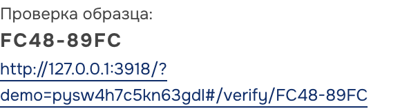
13fb0bb: в ссылке — код демо-кабинета ?demo=….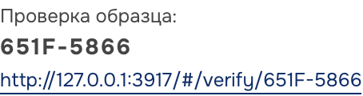
1c65b31: только код справки.Остальные пункты второй рецензии:
| Пункт | Что сделано | Проверка |
|---|---|---|
| 2. Создание и сброс кабинетов | База — после верного пароля; три одновременных входа одного браузера — один кабинет; лимит не обходится параллельными запросами; сброс — из сеанса; два кабинета с одинаковыми логинами и перезапуск (2d22df1) |
sandboxes.test.js, browser-review-1122.py |
| 3. Заявка без игры | Без игрового профиля заявка раньше сохранялась, а студент видел 404; теперь — номер и статус (e229b32, E-47) |
backend-regressions.test.js, browser-review-1122.py |
| 4. Расписание и оценки | Карточка изменений на главной открывает пару (aebbdb2); «Сегодня занятия закончились в …» отдельно от «Сегодня пар нет» (81fea7b, E-48); «Сессия» без оценок — «Недостаточно данных для прогноза» (e456f27, E-49) |
today.test.js, grades-forecast.test.js, браузер с подменёнными часами |
| 5. Повторный замер | Пятеро из 25 повторили задания; обе группы и разница у тех же людей — в разделе 1 | survey-repeat-2026-11-22/ |
| 6. Телефоны и диктор | Без устройства проверены ошибка сети и потерянный ответ сервера: повтор не создаёт копию. Настоящие iPhone, Android и экранный диктор — наш шаг | browser-review-1122.py |
| 8. Одна версия | Один номер выпуска — на странице входа, в подвале, в /api/health, README, маршруте жюри и этом документе (3fc1244, 1c65b31) |
release.test.js |
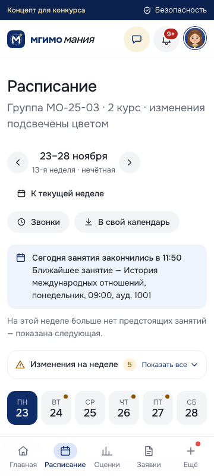
Мы попросили: «проверь строго по критериям всю работу без учета контекста беседы». Агент взял критерии из текста задания и проверял по коду, тестам, публичному стенду и снимкам экранов, а не по памяти. Главная потеря — стенд на сборке 19 ноября; её закрывает только обновление стенда, это наш шаг. Остальное агент исправил после нашего «Да, исправь»: обрезки текста на 360 px, которых не видели тесты ширины страницы (E-50), перечень инструментов с IDE и сервисами, формулировки о версии стенда. Первый прогон после правок упал на поиске в очереди деканата: нестабильный тест показал настоящую гонку в кабинете — ответ на прежний поиск стирал набранный номер (E-51). Исправлено, неуспешная попытка сохранена рядом с успешной. Версия — 1.1.1. Мы подтвердили то, что агент проверить не может: основной путь пройден на настоящих iPhone и Android, стенд открывается из России без VPN, VPS оплачен до 28 ноября. Проход с экранным диктором решили не делать — доступность проверена автоматически: клавиатура, фокус, контраст, роли и подписи.
Каждая проверка запускается на новой временной базе, без пользовательских данных и без
внешнего ИИ: python scripts/collect-evidence.py --output <папка>. Сборщик сохраняет
журналы команд, JSON-отчёты и снимки экранов. Неуспешные попытки не удаляются: они лежат
рядом с успешными и показывают, что именно исправлялось.
Итоговый прогон — из чистой копии репозитория: git clone на коммите f6419db, npm ci по lock-файлу,
затем все наборы на свежих временных базах: 115/115 автотестов и 604/604 браузерных проверок
в 18 наборах, без необработанных ошибок JavaScript. Наборы browser-review-fixes и browser-review-1122
шли с демо-кабинетами, как на стенде; внешние ключи ИИ отключены. Сводка
содержит команды, время и SHA-256 проверенных исходников. Коммиты после f6419db меняют только
документы, PDF и ролик. Первая попытка прогона 1.1.1 (d992b03) упала на поиске в очереди деканата —
гонка в самом кабинете (E-51); она сохранена в release-1.1.1-first-attempt.
Таблица по 18 наборам со ссылками на журналы — в приложении и в соответствии требованиям.
Первая попытка из чистой копии (20:14) остановилась на browser-polish из-за гонки в тесте (E-41) и сохранена
в release-1121-first-attempt. Следующий прогон, release-1121
на коде abaef02, прошёл целиком; после правки отступа в расписании прогон повторён — release-1121-final.
22 ноября после исправления входа на низких экранах (E-44) прогон повторён — release-1122,
а после правки главной по итогам опроса — ещё раз: это итоговый.
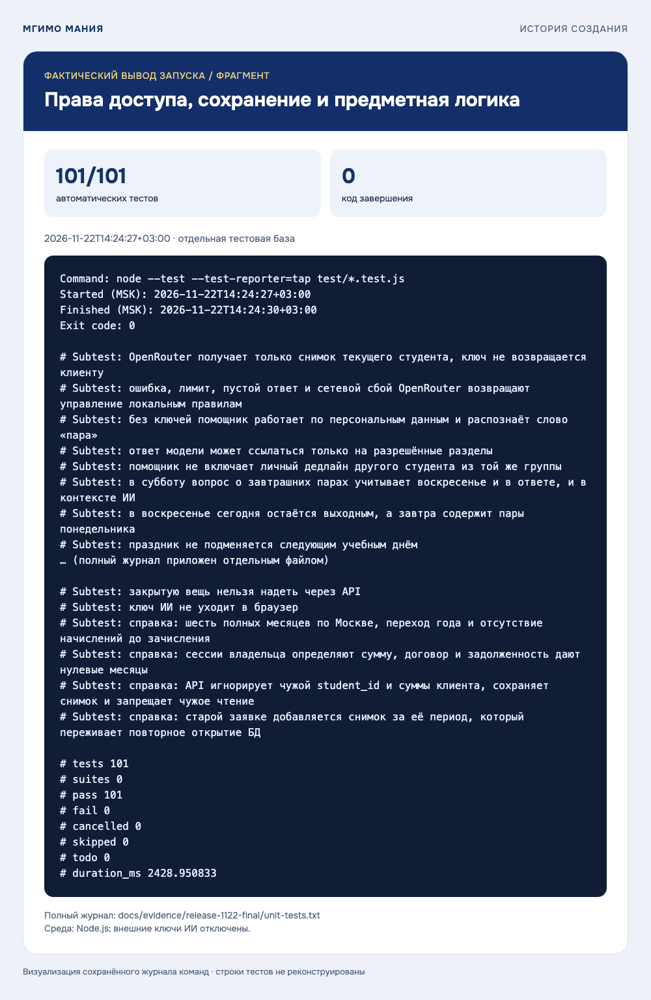
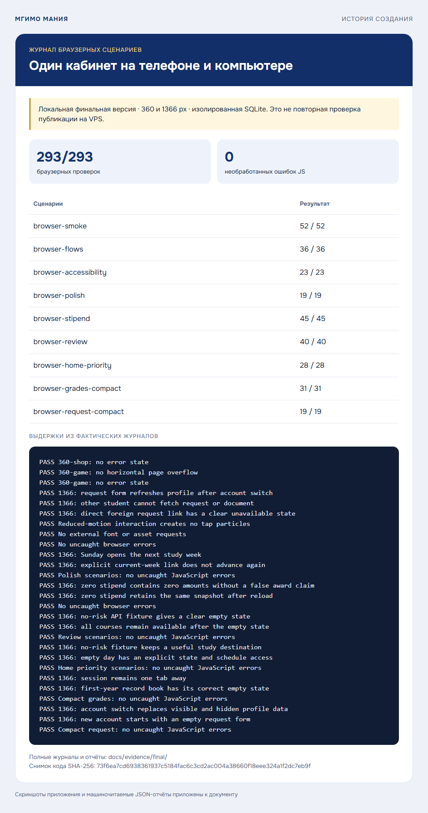
| Когда | Что проверялось | Результат | Материалы |
|---|---|---|---|
| 8 ноября, первый аудит | API, сквозные сценарии, клавиатура и восстановление после ошибок | 30/30 автотестов, 111/111 браузерных проверок | экраны, действия, доступность |
| 8 ноября, первая публикация | HTTPS-стенд; сохранение после перезапуска контейнера; возврат посетителей прежнего сайта | 117/117, заявка пережила перезапуск, миграция service worker 15/15 | стенд, сохранение, миграция |
| 8 ноября, 20:23–20:28 | Компактные оценки и меню; публикация | 35/35 и 215/215 локально, 52/52 и 40/40 на HTTPS | локально, HTTPS |
| 8 ноября, 20:57–21:00 | Главная, успеваемость, форма справки | 35/35 и 293/293 | сводка |
| 8 ноября, 21:44–21:55 | «С чего начать», расписание; публикация | 35/35 и 367/367 локально*, 194/194 на HTTPS, живой ИИ 2/2 | локально, HTTPS, ИИ |
| 9 ноября | Доводка после независимого аудита | 37/37 и 381/381 | сводка |
| 9 ноября, окончательная проверка | Исправления реализации, вкладок, фокуса, контраста и мобильной главной | 42/42 и 492/492 | сводка |
| 19 ноября | Промпты библиотеки, выполненные субагентами Sonnet 5.5 | 73/73 и 523/523 | сводка |
| 21 ноября, 20:14 | Первая попытка из чистой копии, код 931f525 |
остановлена на browser-polish: гонка в тесте (E-41) |
сводка |
| 21 ноября, 20:19–20:24 | Чистая копия, код abaef02: правки рецензии |
100/100 и 562/562 | сводка |
| 21 ноября, 20:27–20:32 | Чистая копия, код c37c69a (до исправления входа, E-44) |
100/100 и 562/562 | сводка |
| 21 ноября | Нагрузка на локальном сервере, 10–100 пользователей без пауз | около 2 750 запросов в секунду, 0 ошибок | замер |
| 22 ноября | Safari на iPhone SE в симуляторе iOS | PDF, форма с клавиатурой, вход; найдено E-44 | снимки |
| 22 ноября, 01:51–01:56 | Чистая копия, код 9e7baad: вход на низких экранах |
100/100 и 568/568 | сводка |
| 22 ноября | Опрос 25 студентов | самооценка лёгкости заданий с телефона 4,4 из 5; трудными назвали риск по дисциплине и перенос пары, по 3 из 25 | ответы и расчёт |
| 22 ноября, 14:24–14:29 | Чистая копия, код 4209326: причина риска на главной |
101/101 и 570/570 | сводка |
| 22 ноября | Повторный замер на исправленной главной: пятеро из тех же 25 | самооценка лёгкости у них 3,2 → 4,4 | ответы и расчёт |
| 22 ноября, 16:38–16:42 | Чистая копия, выпуск 1.1.0 (1c65b31): правки второй рецензии |
115/115 и 599/599 | сводка |
| 22 ноября, 20:29–20:33 | Первая попытка 1.1.1, код d992b03 |
остановлена на browser-review-fixes: гонка в поиске деканата (E-51) |
журналы |
| 22 ноября, 20:37–20:42 | Чистая копия, версия 1.1.1 (f6419db): обрезки на 360 px после проверки по критериям |
115/115 и 604/604 | сводка |
* 333 проверки общего запуска и 34 проверки повтора одного сценария после исправления
ожидания в тесте. Неуспешные попытки сохранены в evidence/finalization-first-attempt/,
finalization-schedule-attempt/, finalization-first-actions-attempt/,
finalization-first-actions-retry/ и deployment/review-browser/browser-review-first-attempt.json.
Во всех этих случаях ошибкой было ожидание в тесте, а не поведение кабинета.
В PDF вложены полные журналы и JSON-отчёты, экспорт истории Git
и записи поручений субагентам. Вложения открываются в PDF-ридере с поддержкой
прикреплённых файлов; те же файлы лежат рядом с документом в репозитории. Карточки журналов
создаются скриптом scripts/render-process-evidence.py.
Полное соответствие стандартам доступности не заявляется, нагрузка замерена только локально: у каждой проверки есть конкретные границы, они описаны в CONTEST_AUDIT.md.
| Инструмент или технология | Задача | Связанный результат и материалы |
|---|---|---|
| Claude Code в приложении Claude (модель Claude Opus 5.5) | 4 ноября — первая версия кабинета по тексту задания: структура, сервер, интерфейс, собственный знак, SVG-графика, кампус, игра и вымышленные демо-данные, самопроверка во встроенном браузере; 9 ноября — независимый аудит по критериям и доводка; 21 ноября — чистка материалов и видео, вечером — 15 пунктов независимого проверяющего (десять закрыты целиком, в пяти — его часть); 22 ноября — восемь пунктов второго проверяющего, в том числе исправление пяти своих ошибок 21 ноября | Журнал сессии 4 ноября (раздел 2); итерации 9, 19, 21 и 22 ноября (разделы 3 и 9); поручения — docs/evidence/review-2026-11-21/ и docs/evidence/review-2026-11-22/ |
| Codex и субагенты | Аудит, исправления, браузерные проверки, интеграция и документы | Инструкции AGENTS.md, поручения в review-session.json и quality-session.json, регрессии и сравнение мобильной версии до/после |
| Claude Code: субагенты Claude Sonnet 5.5 | 19 ноября — промпты библиотеки как настоящие задачи: О-9, П-09, повторные прогоны девяти промптов, исправления по их находкам, независимый аудит П-28 | Поручения и ответы в docs/evidence/subagents-2026-11-19/; раздел 3 |
| Комплект файлов для агентов | Единые правила для всех агентов проекта: инварианты с тестами, узкие роли субагентов, команды, журналы | AGENTS.md, CLAUDE.md, QWEN.md, .claude/, docs/ai/ |
| ChatGPT (gpt-image) | Изображения «диалогов» для ранней версии описания процесса | Удалены как не соответствующие действительности; запись E-11 в docs/ai/ERRORS.md |
| OpenRouter | Ответы помощника по учебным данным вошедшего студента | server/routes/assistant.js, domain/assistant.js; сохранённые живые запросы двух аккаунтов и тесты резервного ответа |
| Anthropic SDK | Альтернативный серверный провайдер помощника | Зависимость и реализация в коде; сохранённые живые проверки относятся к OpenRouter |
| PowerShell, Git, ripgrep | Чтение проекта, поиск, история и запуск команд | Исходники, история Git и команды проверки |
Node.js, SQLite, node:test |
Приложение, данные и автоматические тесты | package.json, server/, test/ |
| Python, Playwright, Chromium | Проверка браузерных сценариев, снимки, подготовка PDF, запись видео | Тестовые сценарии, скрипты сборки документа, scripts/demo/record-demo.py |
| AVFoundation (macOS) | Сборка видео-демонстрации из кадров записи | scripts/demo/encode-demo.swift, docs/video/demo-mobile.mp4 |
pdf-lib, @pdf-lib/fontkit, fontTools |
PDF справки на сервере и шрифт для него | server/domain/documentPdf.js, scripts/build-pdf-font.py, ADR-013 |
| SVG, Canvas, CSS | Собственная графика, игровые сцены и оформление | public/js/art/, public/js/campus/, public/js/game/, public/css/ |
| Onest / Google Fonts | Локальный шрифт интерфейса | Файлы шрифта и лицензия OFL в репозитории |
| Docker Compose и Caddy на VPS | Размещение стенда и HTTPS (сертификат Let's Encrypt) | deploy/, Dockerfile, протоколы публикации в docs/evidence/deployment/ |
| Среда разработки (IDE) | Отдельной IDE в журналах проекта нет: код писали, запускали и проверяли агенты — Claude Code в приложении Claude (правка файлов, терминал, встроенный браузер) и Codex с субагентами; команды — PowerShell на Windows и терминал macOS | Журналы сессий (разделы 2–3), docs/ai/PROMPTS_LOG.md |
| GitHub | Репозиторий, история коммитов, открытый доступ жюри к коду, PDF и ролику | https://github.com/temurysega/vibe_code |
| Google Forms и Google Таблицы | Опрос 25 однокурсников и повторный замер; ответы выгружены в CSV без имён и почты | docs/evidence/survey-2026-11-22/, docs/evidence/survey-repeat-2026-11-22/ |
| Xcode: симулятор iOS | Проверка PDF, формы с экранной клавиатурой и входа в Safari на iPhone SE (iOS 18.1) | docs/evidence/ios-simulator-2026-11-22/ |
Claude Code работал в приложении Claude со встроенным браузером для самопроверки и
с субагентами Sonnet 5.5, Codex — с субагентами, между которыми заранее делилось владение
файлами. Таблица связывает инструменты с задачами и конкретными результатами.
QWEN.md в комплекте — точка входа для Qwen Code на будущее: в истории этой версии
он не подтверждён, поэтому в таблице его нет.
Мы определяли цель и ограничения, передавали требования, выбирали направление развития, давали обратную связь и настройки для публикации. 21 ноября мы передали агенту рецензию и решили объём правок; согласие на новую зависимость, обновление стенда, опрос однокурсников и проверку на настоящих телефонах оставили за собой. 22 ноября передали вторую рецензию, а повторный замер с пятью участниками опроса провели сами. Ассистенты читали и меняли файлы, запускали команды и тесты, готовили материалы. Кабинет попробовали два студента; их замечание о непонятном первом действии привело к доработке начальных подсказок. Потом прошли опрос 25 студентов и повторный замер у пятерых (раздел 1); замеров времени у нас нет — только самооценка.
Сторонние материалы перечислены в THIRD_PARTY.md. В процессе проверки исправлена ошибочная запись лицензии SDK Anthropic: установленный пакет использует Apache-2.0. Код проекта распространяется под MIT, шрифт Onest — под OFL.
«МГИМО Мания» показывает законченный путь: войти под вымышленным студентом, увидеть учебную ситуацию, подать заявление, обработать его в деканате и вернуться к результату. Мобильный кабинет выполняет те же основные задачи. Собственные графика и игровые элементы формируют образ продукта, а помощник позволяет задать вопрос по учебным данным.
Для демонстрации подготовлены три разных студента и сотрудник деканата. Общий пароль
mgimo2026 предназначен только для этих публичных вымышленных аккаунтов.
| Логин | Что показать |
|---|---|
a.morozova |
Учебный риск, изменения пар и справки студентки МО |
t.aliev |
Другой факультет, профиль первокурсника и первый заказ справки |
k.lebedeva |
Академический долг и запись на пересдачу |
dekanat.mo |
Очередь заявок своего факультета и решение по заявлению |
Встроенный «Демо-тур» знакомит с экранами. Маршрут жюри дополняет его полным циклом с двумя ролями, названиями кнопок и ожидаемыми результатами.
Материалы, которые можно проверить: исходники, метаданные Git, комплект файлов для
ИИ-агентов, журнал промптов и ошибок, диалоги с субагентами 19 ноября, методичка промптов,
снимки интерфейса, автоматические и браузерные сценарии, сохранённые журналы и пример
демонстрационного документа.
Видео-демонстрация с мобильного экрана (2:11, версия 1.1.1) — docs/video/demo-mobile.mp4;
её записал сценарий scripts/demo/record-demo.py.